A.1 Pengenalan Sistem Pneumatik
💨
Pneu + Matik
Pneu (Greek) = Angin · Matik = Kuasa
Sistem yang digerakkan oleh udara termampat.
⚙️
Media Pemindahan Kuasa
Udara termampat — udara sekeliling yang dimampatkan guna pemampat udara kendalian motor elektrik.
Aplikasi dalam Industri
🏭
Elektronik
Pemasangan komponen elektronik
🍔
Makanan
Mesin memproses makanan
🔧
Alat Pneumatik
Mesin gerudi, motor udara
🚌
Bas
Pintu automatik, brek
A.2 Gambarajah Blok Sistem Pneumatik
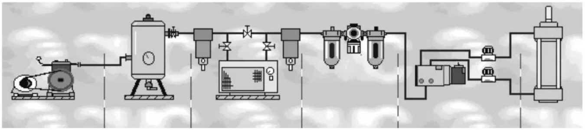
Gambarajah A.1: Blok komponen Sistem Pneumatik
Pemampat
→
Penerima
→
Pengering
→
Unit Servis
→
Injap Kawalan
→
Penggerak
6 Komponen Utama
🔩
Pemampat Udara
Mengumpul & memampatkan udara
🛢️
Penerima Udara
Menyimpan udara termampat
💧
Pengering Udara
Mengeringkan wap air
🎛️
Unit Servis
Pengatur, tolok, pelincir
🔀
Injap Kawalan Arah
Mengawal arah gerakan
⚡
Penggerak
Melakukan kerja (silinder/motor)
A.3 Kebaikan Sistem Pneumatik
🚀
Mudah Disalurkan
Jarak jauh, mudah simpan
🔥
Tidak Mudah Terbakar
Selamat dari api
💪
Pendaraban Daya
Mudah diselaraskan
🎯
Kebolehlenturan
Kawalan mesin fleksibel
⚡
Sambutan Cepat
Mula & berhenti pantas
🌿
Bersih
Tidak mencemarkan
🔧
Mudah Dibina
Komponen ringkas
A.4 Keburukan Sistem Pneumatik
🔊
Bising
Ekzos udara kuat
💸
Kos Penyediaan Tinggi
Buang bahan cemar
📉
Daya Terhad
20 kN – 30 kN sahaja
〰️
Kelajuan Tidak Seragam
Kebolehmampatan udara
💰
Mahal
Sebagai sumber kuasa
🔧
Banyak Paip
Sistem perpaipan luas
A.5 Simbol-Simbol Piawai Bagi Komponen Pneumatik
Simbol piawai ISO bagi komponen-komponen sistem pneumatik adalah seperti di bawah:
A.5.1 Komponen Sistem
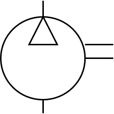
Pemampat Pneumatik
Sesaran tetap
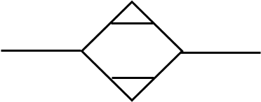
Pengering Udara
Pengering
Penapis
Tanpa pengasing air
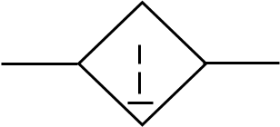
Penapis Air
Dengan pengasing air
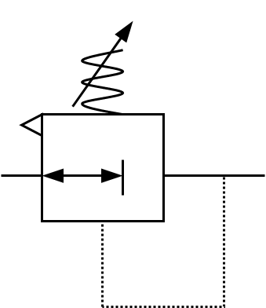
Pengatur Tekanan
Boleh ubah
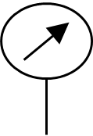
Tolok Tekanan
Tolok tekanan
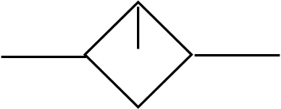
Pelincir
Alat pelincir
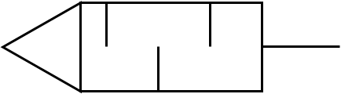
Penyeyap
Penyeyap bunyi
A.5.2 Penggerak — Silinder
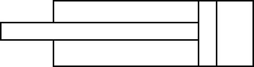
Silinder Tindakan Searah
Tanpa pegas
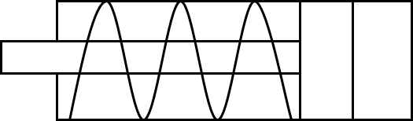
Silinder Tindakan Searah
Kembalikan pegas
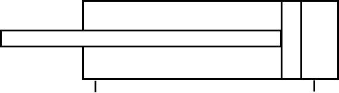
Silinder Tindakan Dua Arah
Satu rod
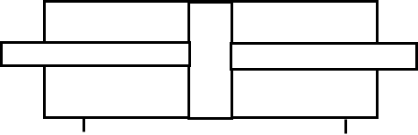
Silinder Tindakan Dua Arah
Dua rod
A.5.3 Injap Kawalan Arah
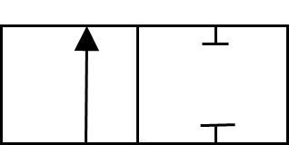
Injap 2/2
Dua liang tertutup
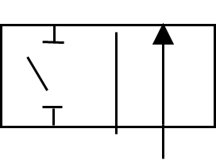
Injap 2/2
Dua liang terbuka
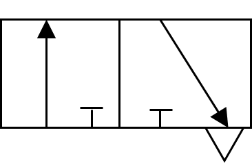
Injap 3/2
Liang masuk tertutup (NC)
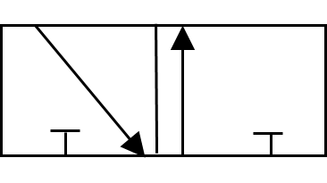
Injap 3/2
Liang masuk terbuka (NO)
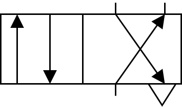
Injap 4/2
Dua arah aliran (satu ekzos)
A.5.4 Kaedah Mengerakkan Injap
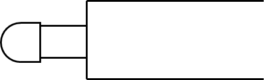
Gerakan Insani — Butang
Butang tekan
Gerakan Insani — Tuil
Tuil
Gerakan Insani — Injak
Injak
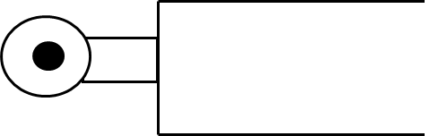
Gerakan Mekanik
Penguling
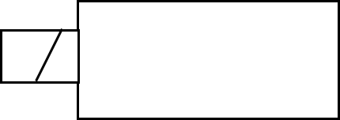
Gerakan Elektrik
Solenoid satu gegelung
A.5.5 Injap Kawalan Aliran
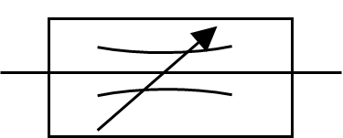
Kawalan Aliran Boleh Ubah
Boleh laras
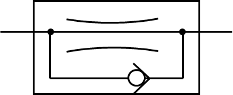
Kawalan Aliran Satu Arah
Satu arah sahaja
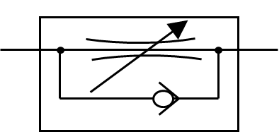
Kawalan Aliran Boleh Ubah 1 Arah
Boleh laras satu arah
A.5.6 Gerakan Pneumatik
Tekanan pada Injap Padu
Tekanan pandu
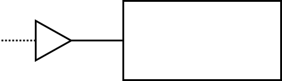
Tekanan Secara Terus
Tekanan terus
A.5.7 Injap Sehala
Injap Sehala
Dengan pegas
A.5.8 Saluran dan Sambungan
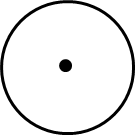
Punca Udara
Daripada pemampat
Saluran Udara
Saluran utama
Saluran Panduan Pneumatik
Saluran pandu
Sambungan Saluran
Penyambung
A.6 Gambarajah Asas Sambungan Sistem Pneumatik
A.6.1 Gambarajah Nyata (Pandangan Sebenar)
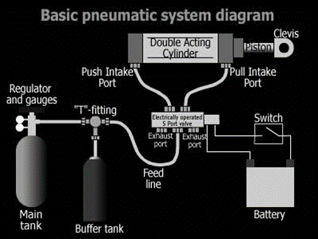
Gambarajah A.2: Asas sambungan sistem pneumatik — pandangan nyata
Pemampat
→
Penerima
→
Penapis
→
Pengatur
→
Injap
→
Silinder
A.6.2 Gambarajah Keratan
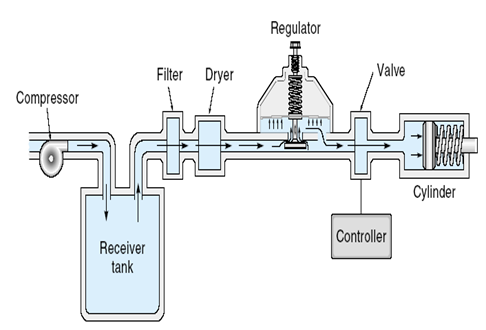
Gambarajah A.3: Asas sambungan sistem pneumatik — pandangan keratan
A.7 Mentafsir Litar Pneumatik Mengikut Rajah Blok
A.7.1 Pandangan Rajah Blok
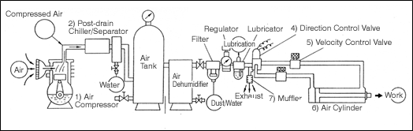
Gambarajah A.4: Pandangan rajah blok sistem pneumatik
A.7.2 Pandangan Skematik
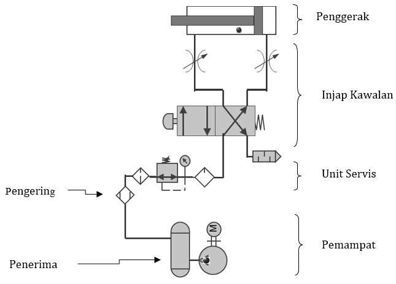
Gambarajah A.5: Pandangan skematik sistem pneumatik (simbol ISO)
A.8 Mentafsir dan Mengenalpasti Komponen dalam Litar Skematik Pneumatik
A.8.1 Litar 1 — Litar Skematik Lengkap
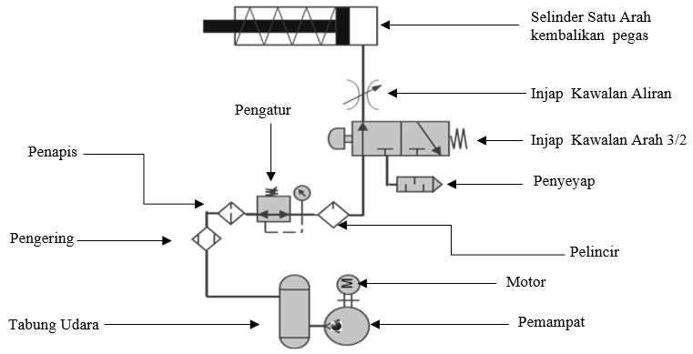
Litar 1: Litar skematik pneumatik lengkap
A.8.2 Litar 2 — Litar Skematik Ringkas
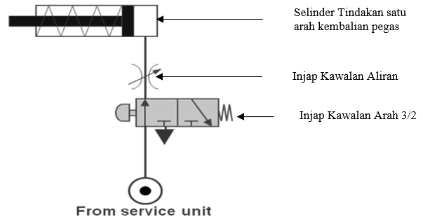
Litar 2: Litar skematik ringkas
A.9 Struktur Sistem Pneumatik
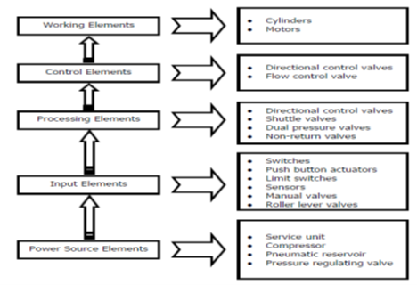
Gambarajah A.6: Struktur sistem pneumatik
⚡
Power Source Elements
Service unit, compressor, pneumatic reservoir, pressure regulating valve
🎛️
Input Elements
Switches, push button, limit switches, sensors, manual valves, roller lever valves
⚙️
Processing Elements
Directional control valves, shuttle valves, dual pressure valves, non-return valves
🎯
Control Elements
Directional control valves, flow control valve
🔧
Working Elements
Cylinders, motors
A.10 Fungsi Komponen
🔩
Pemampat
Memampatkan udara ke tekanan lebih tinggi
🛢️
Tabung Udara
Simpan, stabilkan tekanan, kumpul peluwap
💧
Pengering
Turunkan suhu, keringkan udara
🧽
Penapis
Bersihkan udara dari kekotoran
🎛️
Pengatur
Pastikan tekanan malar
🛢️
Pelincir
Sembur minyak pelincir
🔇
Penyenyap
Kurangkan bunyi ekzos
🔀
Injap Kawalan Arah
Kawal arah udara
〰️
Injap Kawalan Aliran
Kawal kadar aliran
⚡
Silinder
Tukar tenaga udara → gerakan linear
Rumusan Topik 1 — Bahagian A (Pneumatik)
- Pneumatik = sistem guna udara termampat sebagai media pemindahan kuasa
- 6 komponen utama: Pemampat → Penerima → Pengering → Unit Servis → Injap Kawalan → Penggerak
- Kebaikan: Mudah disalurkan, tidak mudah terbakar, bersih, laju, mudah dibina
- Keburukan: Bising, kos penyediaan tinggi, daya terhad (20–30 kN), kelajuan tidak seragam
- Simbol ISO wajib dikuasai untuk baca & lukis rajah litar
- Struktur sistem: Power Source → Input → Processing → Control → Working Elements
- Fungsi komponen berbeza mengikut peranan dalam sistem